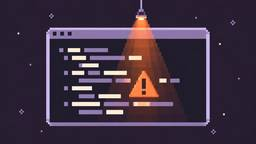

Socket
フィード

Deno Goes the Way of the Dinosaur
Socket
Cloudflare is acquiring Deno’s team, which will provide another year of bug fixes and security updates before ending support for the runtime.
1日前

Anthropic Gives Open Source Maintainers a Fast Track to Mythos Vulnerability Findings
Socket
Anthropic’s free OSS Scanner uses Mythos and other Claude models to find open source vulnerabilities and send maintainers reports with proposed fixes.
2日前
Front Lines Podcast: What Founders Get Wrong When Pitching CISOs
Socket
On Front Lines’ Early Adopters: CISO podcast, Andrew Becherer shares lessons from Datadog, weighs the long-term costs of AI-built tools, and explains how founders can actually gain a CISO’s trust.
3日前

Socket for Origin Now Available
Socket
Socket for Origin scans dependency changes in pull requests and flags security risks based on your team’s policies. Now available in Cursor’s App Marketplace.
3日前

Agent Baseline Publishes Security Reference Architecture for Software Factories
Socket
Agent Baseline’s new reference architecture shows how to secure software factories with four boundaries enforced outside the AI agent.
4日前

arXiv Is Rate Limiting Authors Following a Flood of AI Slop Submissions
Socket
arXiv now limits authors to two submissions a month as AI slop overwhelms moderators, delays good papers, and sparks debate over applying the limit to everyone.
8日前
New GhostAction Wave Hits Hundreds of Repos, Expanding Beyond CI/CD Secrets to Cloud Credentials
Socket
A new GhostAction wave hits hundreds of GitHub repos, expanding CI/CD secret theft to cloud and AI credentials in source code and git history.
8日前
TensorLake npm SDK Compromised in ChainDrop Shai-Hulud Credential-Stealing Attack
Socket
Tensorlake npm SDK version 0.5.144 was compromised in a ChainDrop / Shai-Hulud attack, delivering credential-stealing malware.
10日前
16 Malicious Firefox Extensions Steal Cryptocurrency Wallet Credentials
Socket
Socket found 16 malicious Firefox extensions designed to steal crypto wallet recovery phrases and private keys using cloned Rabby and OKX interfaces.
10日前
Introducing Socket Scanning for VS Code Marketplace Extensions
Socket
Socket now scans VS Code extensions, giving teams early detection of risky behaviors, hidden capabilities, and supply chain threats in developer tools.
11日前